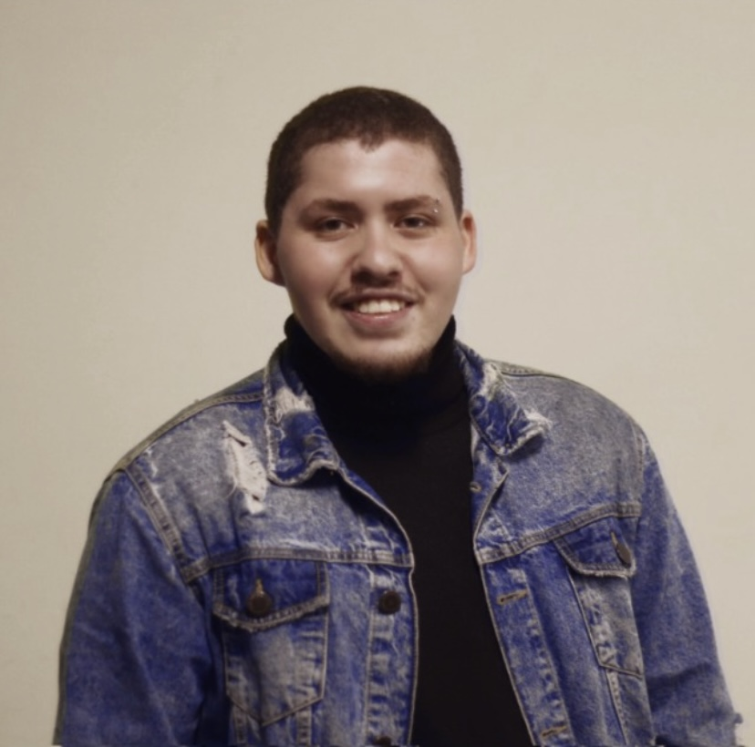

Mauricio Marins Moreira
Designer e Estudante de Publicidade


Designer que se interessou pela área desde criança, com certa experiência, mas em busca de muito mais!
Habilidades
- Photoshop
- Ilustrator
- InDesign
- Vegas Pro
- Wix
- MetaBusiness
Avançado/Intermediário:
Formação
- FMU: Publicidade e Propaganda (Cursando)
- Escola Saga Art: Curso Start (concluído)
Experiência:
-
Cebrusa
Estágiario de design e marketing
Trabalhei entre, fevereiro de 2022 - julho de 2022.
-
Clínica Vie
Auxiliar Administrativo
Trabalhei entre, julho de 2021 - fevereiro de 2022.
-
Clínica Vie
Estagiário Administrativo e Marketing
Trabalhei entre, agosto de 2019 - junho de 2021.